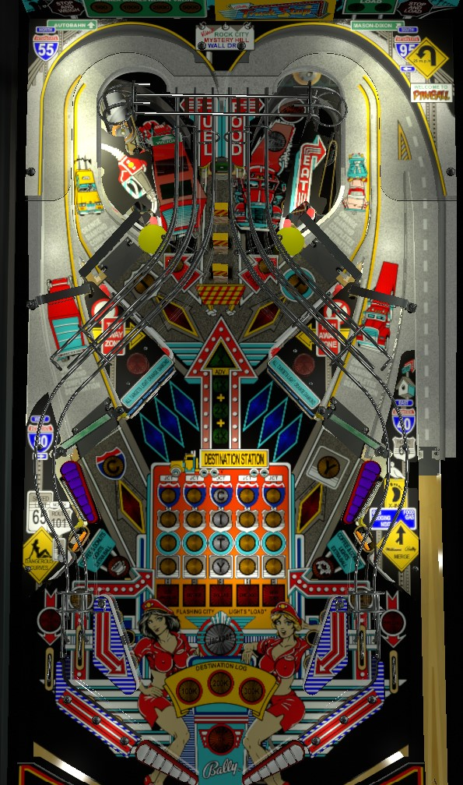

Shoot ramps to collect letters in City repeatedly. Lower ramps usually feed the upper flippers, and upper ramps usually feed the lower flippers. City advances increase the end of ball bonus, the lock and release for 2-ball multiball, and make progression toward the carryover jackpot. After completing all 5 cities, earn the jackpot by spelling City again within 50 seconds. Complete the inline drops then hit the target behind them to advance bonus multiplier; one ball's bonus can be well over 1,000,000 points. Unlight all 6 blue targets in the center to light a ramp red, which instantly spots an entire City.
The plunge on Truck Stop takes the path of the lower right ramp and is dropped off at the upper right flipper. Watch the back panel of the game carefully: the lit spinner value rotates between 100 points (unlit), 500 points, 1,000 points, 2,000 points, or 5,000 points per spin. When the ball gets about 2/3 of the way around its plunge route, it triggers a switch that locks in the currently lit spinner value. As far as I can tell, this spinner value is locked in for the rest of the ball and cannot be changed, so always try to get a high value. (The spinner itself is just above and to the left of the center inline drop targets, in front of the "left Truck Stop saucer".)
Collect a letter in City by shooting any of the game's 4 ramps; C in the lower left, I in the upper left, T in the upper right, or Y in the lower right. Unlike many games that require you to spell a word repeatedly, Truck Stop does let you work ahead; you don't to finish the first spelling of City before collecting your second Y, for example. Spelling the word City advances you to the next city: in order, Los Angeles, Denver, Dallas, Chicago, and New York. There are 3 ways to spot City letters without using the ramps:
City letters do a great many things for gameplay.
If Coffee has not been collected, the right in lane will be lit; rolling through it lights the standup target in the lower left for Coffee. Similarly, if Donuts is not collected, the left in lane will be lit, and rolling through it lights the lower right standup target for Donuts. If Coffee and Donuts are collected within about 30 seconds of each other, the right Truck Stop saucer will be lit for Extra Ball. This feature can only be collected once per ball in play.
Truck Stop has a conventional in/out lane setup. The out lanes are lit alternately for Special after a Jackpot chance begins.
Bonus multiplier is advanced by knocking down all 3 inline drop targets in the center of the table, then hitting the green standup target behind them before the inline drops reset. Completing this sequence increases the bonus multiplier by 1, up to a maximum of 7x. The higher the bonus multiplier is, the shorter the timer lasts before the inline drop targets reset after they have been cleared. Each City letter collected scores 5,000 points in base bonus. The game can keep track of 3 completed grids; this plus a fully complete current grid makes possible a maximum bonus of 7x 400,000 = 2,800,000 points, which is very significant. There is no mid-ball bonus collect. Bonus multipliers are never carried over from ball to ball, but base bonus (City letters) are always built up throughout the whole game.
The original title for The Pinball Primer was going to be Pinball Rest Stop. The name was changed following concerns that people who typed "Pinball Rest Stop" into a search engine would get results for this game, Truck Stop, rather than the website that became The Pinball Primer. The name "Pinball Primer" was proposed by voidlingBento, a close friend of the author.